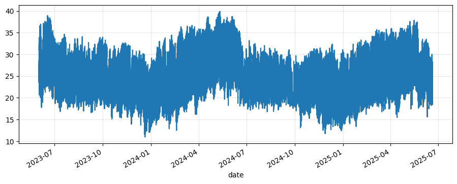
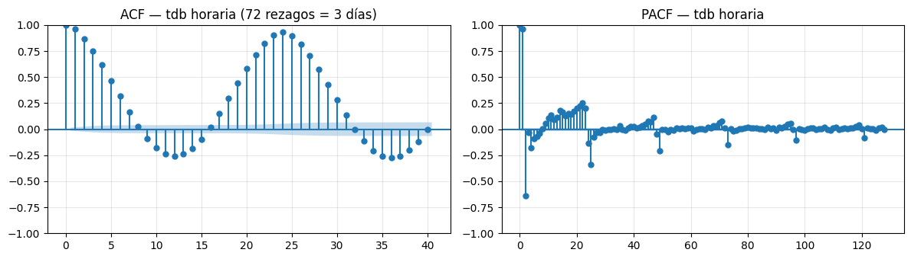
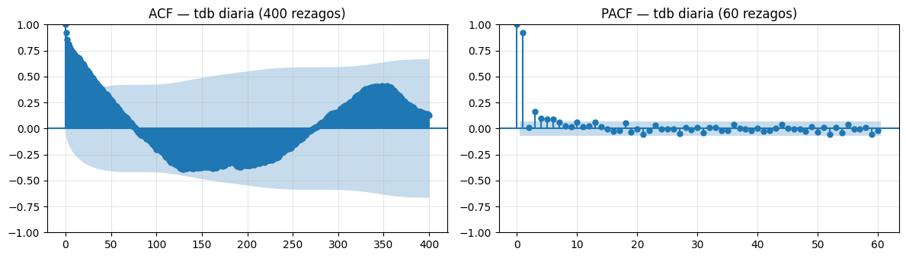
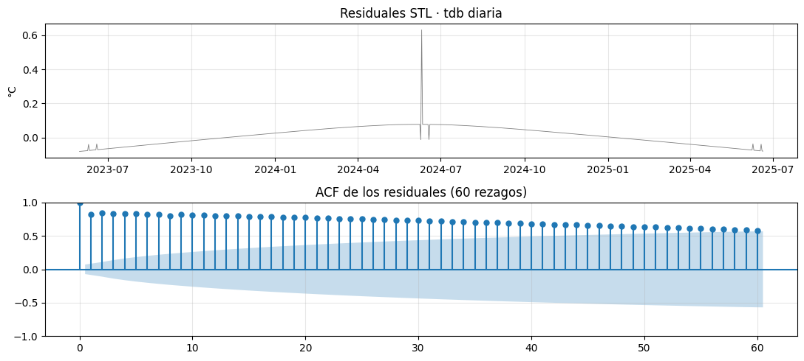
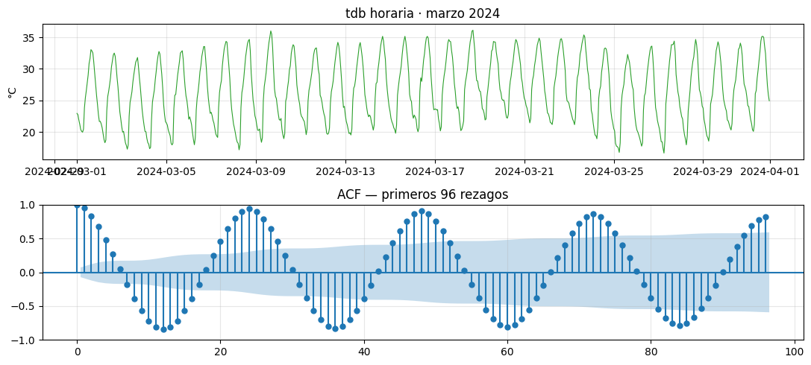

import numpy as np
import pandas as pd
import matplotlib.pyplot as plt
import matplotlib.dates as mdates
from statsmodels.graphics.tsaplots import plot_acf, plot_pacf
from statsmodels.tsa.stattools import acf, pacf
from statsmodels.tsa.seasonal import STL
plt.rcParams["figure.figsize"] = (11, 4)
plt.rcParams["axes.grid"] = True
plt.rcParams["grid.alpha"] = 0.315 Sesión 2 · Laboratorio
15.1 ACF/PACF, gaps y manejo temporal sobre ClimaLab
Estadística, Detección de Anomalías e Imputación de Series Temporales Posgrado en Ingeniería · Área Energía · IER-UNAM
15.1.1 Objetivos del laboratorio
- Manejar correctamente timestamps y zonas horarias en pandas.
- Detectar gaps explícitos e implícitos en una serie meteorológica real.
- Aplicar control de calidad básico (rangos físicos, saturación de sensor).
- Calcular ACF y PACF con
statsmodelssobre la serie de temperatura. - Identificar visualmente las periodicidades diaria y anual a partir de la ACF.
- Aplicar ACF/PACF sobre los residuales de una descomposición STL para validar el modelo.
15.2 1. Carga
f = "../data/ClimaLab_2023-05-31_2025-06-20.parquet"
df = pd.read_parquet(f)
df.head()| variable | dhi | dni | ghi | p_atm | rain_acc | rh | solar_altitude | tdb | uv | wd | ws |
|---|---|---|---|---|---|---|---|---|---|---|---|
| date | |||||||||||
| 2023-05-31 18:59:00 | 7.391 | 21.710 | 9.66 | 641.4001 | 0.0 | 60.18 | 1.867189 | 27.78 | 0.0 | 336.6 | 0.0 |
| 2023-05-31 19:00:00 | 7.020 | 0.000 | 9.26 | 641.4001 | 0.0 | 60.46 | 1.663787 | 27.73 | 0.0 | 344.7 | 0.0 |
| 2023-05-31 19:01:00 | 6.603 | 2.945 | 8.83 | 641.3997 | 0.0 | 60.42 | 1.461872 | 27.71 | 0.0 | 319.1 | 0.0 |
| 2023-05-31 19:02:00 | 6.262 | 3.643 | 8.46 | 641.4001 | 0.0 | 60.81 | 1.261586 | 27.69 | 0.0 | 322.8 | 0.0 |
| 2023-05-31 19:03:00 | 5.952 | 7.574 | 8.02 | 641.3999 | 0.0 | 60.45 | 1.063073 | 27.65 | 0.0 | 346.9 | 0.0 |
df.tdb.plot()
print(f"Forma del DataFrame: {df.shape[0]:,} filas × {df.shape[1]} columnas")
print(f"Período: {df.index.min()} a {df.index.max()}")
print(f"Frecuencia esperada: 1 min")
print(f"Tipo de índice: {type(df.index).__name__}, tz = {df.index.tz}")Forma del DataFrame: 1,076,768 filas × 11 columnas
Período: 2023-05-31 18:59:00 a 2025-06-20 00:00:00
Frecuencia esperada: 1 min
Tipo de índice: DatetimeIndex, tz = None15.3 2. Manejo de timestamps y zonas horarias
El índice viene naive (tz=None). Recordemos: ClimaLab guarda hora local de Morelos (UTC−6, sin DST). Hagamos explícito ese contexto.
# Anclamos la zona horaria. Esto NO modifica los timestamps,
# sólo les pega una etiqueta. La diferencia con tz_convert es importante:
# - tz_localize("America/Mexico_City"): "estos números YA estaban en hora local"
# - tz_convert("America/Mexico_City"): "estos números están en UTC, conviértelos"
df = df.tz_localize("America/Mexico_City", nonexistent="shift_forward", ambiguous="NaT")
print("Índice ahora con tz:", df.index.tz)
print("Primer timestamp: ", df.index[0])
print("Último timestamp: ", df.index[-1])Índice ahora con tz: America/Mexico_City
Primer timestamp: 2023-05-31 18:59:00-06:00
Último timestamp: 2025-06-20 00:00:00-06:0015.3.1 ¿Por qué importa tanto?
Si tratamos UTC como local (o viceversa), el ciclo diario aparecerá desplazado: el máximo diurno se moverá 6 horas y la descomposición saldrá mal centrada. Es el error más común en análisis meteorológico y la razón por la que vale la pena dedicarle 30 segundos cada vez que se carga un dataset.
15.4 3. Detección de gaps
Hay dos clases de gaps a buscar:
- Filas faltantes (el índice salta).
NaNdentro de filas existentes (la fila está, el valor no).
# 3.1 Filas faltantes: comparamos el índice real con un rango completo a 1 min
esperado = pd.date_range(df.index.min(), df.index.max(), freq="1min", tz=df.index.tz)
faltantes_idx = esperado.difference(df.index)
print(f"Filas esperadas: {len(esperado):,}")
print(f"Filas presentes: {len(df):,}")
print(f"Filas faltantes: {len(faltantes_idx):,} ({100*len(faltantes_idx)/len(esperado):.2f}%)")Filas esperadas: 1,080,302
Filas presentes: 1,076,768
Filas faltantes: 3,534 (0.33%)# 3.2 ¿Cómo se distribuyen esos gaps en el tiempo? ¿Son cortos y dispersos
# o largos y concentrados?
if len(faltantes_idx) > 0:
# Agrupamos timestamps faltantes consecutivos en bloques (gap "real")
faltantes_serie = pd.Series(1, index=faltantes_idx)
bloques = (faltantes_serie.index.to_series().diff() != pd.Timedelta("1min")).cumsum()
duraciones = faltantes_serie.groupby(bloques).size() # minutos por bloque
print(f"Número de bloques de gap: {len(duraciones):,}")
print(f"Mediana del bloque (min): {duraciones.median():.0f}")
print(f"Bloque más largo (min): {duraciones.max():,}")
print()
print("Top-5 gaps más largos:")
top = duraciones.sort_values(ascending=False).head(5)
for b, dur in top.items():
inicio = faltantes_serie[bloques == b].index[0]
print(f" {inicio} → {dur:,} min ({dur/60:.1f} h)")
else:
print("Sin filas faltantes.")Número de bloques de gap: 233
Mediana del bloque (min): 1
Bloque más largo (min): 624
Top-5 gaps más largos:
2024-02-17 21:12:00-06:00 → 624 min (10.4 h)
2023-05-31 22:00:00-06:00 → 573 min (9.6 h)
2025-04-26 04:32:00-06:00 → 132 min (2.2 h)
2025-05-06 04:28:00-06:00 → 126 min (2.1 h)
2025-05-01 04:39:00-06:00 → 125 min (2.1 h)# 3.3 NaN por columna (la otra cara de los gaps)
faltantes_col = df.isna().sum()
porcentajes = (faltantes_col / len(df) * 100).round(1)
pd.DataFrame({"NaN": faltantes_col, "%": porcentajes}).sort_values("%", ascending=False)| NaN | % | |
|---|---|---|
| variable | ||
| dni | 534987 | 49.7 |
| ghi | 533579 | 49.6 |
| dhi | 533536 | 49.5 |
| p_atm | 0 | 0.0 |
| rain_acc | 0 | 0.0 |
| rh | 0 | 0.0 |
| solar_altitude | 0 | 0.0 |
| tdb | 0 | 0.0 |
| uv | 0 | 0.0 |
| wd | 0 | 0.0 |
| ws | 0 | 0.0 |
Recordatorio del lab anterior. dhi, dni, ghi tienen ~50 % de NaN porque sólo se reportan de día. No es un defecto, es estructural. tdb (temperatura) está casi completa: la usaremos como caso base para ACF/PACF.
15.5 4. Control de calidad básico
Antes de calcular ACF, los cuatro chequeos del oficio: rangos físicos, saturación, duplicados de tiempo, y outliers gruesos.
# 4.1 Rangos físicos plausibles para Morelos
limites = {
"tdb": (-5, 50),
"rh": (0, 100),
"p_atm": (800, 900), # Temixco está a ~1280 m, ~870 hPa típica
"ws": (0, 40),
"ghi": (0, 1500),
}
resumen = []
for var, (lo, hi) in limites.items():
s = df[var].dropna()
fuera = ((s < lo) | (s > hi)).sum()
resumen.append({"var": var, "min": s.min(), "max": s.max(),
"fuera_rango": fuera, "% fuera": 100 * fuera / len(s)})
pd.DataFrame(resumen).round(2)| var | min | max | fuera_rango | % fuera | |
|---|---|---|---|---|---|
| 0 | tdb | 10.98 | 39.93 | 0 | 0.00 |
| 1 | rh | -8.19 | 138.50 | 117 | 0.01 |
| 2 | p_atm | 443.27 | 1593.04 | 199705 | 18.55 |
| 3 | ws | 0.00 | 18.28 | 0 | 0.00 |
| 4 | ghi | 0.00 | 1360.00 | 0 | 0.00 |
Confirmamos lo del lab anterior: p_atm y rh tienen valores físicamente imposibles. Para esta sesión los marcaremos como NaN en una copia limpia.
df_qc = df.copy()
for var, (lo, hi) in limites.items():
mask_fuera = (df_qc[var] < lo) | (df_qc[var] > hi)
df_qc.loc[mask_fuera, var] = np.nan
if mask_fuera.sum():
print(f" {var}: marcados {mask_fuera.sum():,} valores fuera de [{lo}, {hi}]") rh: marcados 117 valores fuera de [0, 100]
p_atm: marcados 199,705 valores fuera de [800, 900]# 4.2 Saturación: tramos donde el sensor reporta el mismo valor exacto
# durante muchos minutos seguidos. Buscamos en tdb (no debería ocurrir).
tdb = df_qc["tdb"].dropna()
runs = (tdb != tdb.shift()).cumsum()
duraciones_run = tdb.groupby(runs).size()
print(f"Run más largo de tdb constante: {duraciones_run.max()} minutos")
print(f"Runs de >30 min con tdb idéntica: {(duraciones_run > 30).sum()}")Run más largo de tdb constante: 10 minutos
Runs de >30 min con tdb idéntica: 0# 4.3 Timestamps duplicados
duplicados = df.index.duplicated().sum()
print(f"Timestamps duplicados en el índice: {duplicados}")Timestamps duplicados en el índice: 015.6 5. ACF y PACF a resolución horaria — ciclo diario
Con 1 millón de filas a 1 min, calcular ACF directamente es lento e innecesario para ver el ciclo diario. Resampleamos a 1 hora y nos fijamos en hasta 72 rezagos (3 días).
horario = df_qc.resample("h").mean(numeric_only=True)
tdb_h = horario["tdb"].dropna()
print(f"tdb horaria: {len(tdb_h):,} puntos")
print(f"NaN restantes: {tdb_h.isna().sum()}")tdb horaria: 17,982 puntos
NaN restantes: 0tdbdate
2023-05-31 18:59:00-06:00 27.78
2023-05-31 19:00:00-06:00 27.73
2023-05-31 19:01:00-06:00 27.71
2023-05-31 19:02:00-06:00 27.69
2023-05-31 19:03:00-06:00 27.65
...
2025-06-19 23:56:00-06:00 18.88
2025-06-19 23:57:00-06:00 18.89
2025-06-19 23:58:00-06:00 18.87
2025-06-19 23:59:00-06:00 18.87
2025-06-20 00:00:00-06:00 18.87
Name: tdb, Length: 1076768, dtype: float6460*24*365525600fig, axes = plt.subplots(1, 2, figsize=(12, 3.5))
plot_acf(tdb_h, lags=40, ax=axes[0])
axes[0].set_title("ACF — tdb horaria (72 rezagos = 3 días)")
plot_pacf(tdb_h, lags=128, ax=axes[1], method="ywm")
axes[1].set_title("PACF — tdb horaria")
plt.tight_layout(); plt.show()
15.6.1 Lo que vemos
- Picos en la ACF cada 24 rezagos (24, 48, 72): firma inequívoca del ciclo diario.
- La ACF no decae rápido a cero: oscila. Eso confirma que la serie no es estacionaria — la estacionalidad la hace volver una y otra vez al mismo nivel.
- La PACF tiene un pico fuerte en lag 1 (la temperatura de “ahora” está casi determinada por la de “hace 1 hora”), y picos secundarios cerca de 24.
Conclusión práctica. Si vamos a modelar
tdbcon ARIMA, necesitamos diferenciación estacional (\(s=24\)) para volverla estacionaria. Eso es la \(D\) de SARIMA, que veremos en la sesión 7.
15.7 6. ACF a resolución diaria — ciclo anual
Ahora resampleamos a un día y miramos hasta 400 rezagos (más de un año).
diario = df_qc.resample("1D").mean(numeric_only=True)
tdb_d = diario["tdb"].dropna()
print(f"tdb diaria: {len(tdb_d):,} puntos")tdb diaria: 752 puntosfig, axes = plt.subplots(1, 2, figsize=(12, 3.5))
plot_acf(tdb_d, lags=400, ax=axes[0])
axes[0].set_title("ACF — tdb diaria (400 rezagos)")
plot_pacf(tdb_d, lags=60, ax=axes[1], method="ywm")
axes[1].set_title("PACF — tdb diaria (60 rezagos)")
plt.tight_layout(); plt.show()
15.7.1 Lo que vemos
- En la ACF diaria, la correlación cae los primeros días, vuelve a subir alrededor del rezago 365. Ese es el ciclo anual: la temperatura de hoy se parece a la de hace exactamente un año.
- En los rezagos cercanos a 180 hay correlación negativa: hoy se parece poco a hace 6 meses (que es la estación opuesta).
- La PACF en los primeros rezagos ya muestra que
tdbdiaria tiene memoria de varios días — un AR de orden alto o un ARMA es el modelo natural.
15.8 7. ACF sobre los residuales de STL
Una de las pruebas más útiles: ajustamos un modelo y miramos si los residuales se ven como ruido blanco. Si la ACF de los residuales sale plana, el modelo capturó la estructura; si quedan picos, hay algo más que explicar.
# Re-aplicamos STL diaria con período = 365 (igual que en la sesión 1)
stl = STL(tdb_d, period=365, robust=True).fit()
resid = stl.resid.dropna()
fig, axes = plt.subplots(2, 1, figsize=(11, 5), sharex=False)
axes[0].plot(resid.index, resid.values, lw=0.6, color="C7")
axes[0].set_title("Residuales STL · tdb diaria")
axes[0].set_ylabel("°C")
plot_acf(resid, lags=60, ax=axes[1])
axes[1].set_title("ACF de los residuales (60 rezagos)")
plt.tight_layout(); plt.show()
15.8.1 Interpretación
- Si la ACF de los residuales está mayoritariamente dentro de las bandas → STL hizo bien su trabajo.
- Si quedan picos significativos en los primeros rezagos → hay autocorrelación de corto plazo no capturada (típico en datos diarios: el “estado” del clima persiste varios días). Esto es una oportunidad de modelar el residual con un AR de orden bajo.
Volveremos a este flujo en el Bloque 4: anomalías como puntos cuyo residual no encaja en lo que la ACF esperaría.
15.9 8. Periodicidad escondida: ¿la veríamos sin saber que está?
Pregunta provocadora: si no supiéramos que el ciclo diario tiene período 24, ¿la ACF nos lo descubriría?
Tomemos un mes de tdb horaria y simulemos a alguien que no sabe nada del fenómeno.
tdb_mes = horario["tdb"].loc["2024-03"].dropna()
fig, axes = plt.subplots(2, 1, figsize=(11, 5))
axes[0].plot(tdb_mes.index, tdb_mes.values, lw=0.8, color="C2")
axes[0].set_title("tdb horaria · marzo 2024")
axes[0].set_ylabel("°C")
plot_acf(tdb_mes, lags=96, ax=axes[1]) # 96 h = 4 días
axes[1].set_title("ACF — primeros 96 rezagos")
plt.tight_layout(); plt.show()
# Y, programáticamente, ¿en qué rezago está el primer máximo local de la ACF?
acf_vals = acf(tdb_mes, nlags=96)
# Buscamos el primer pico después del lag 0
diffs = np.diff(acf_vals)
picos = np.where((diffs[:-1] > 0) & (diffs[1:] < 0))[0] + 1
print(f"Primer pico local de la ACF en rezago: {picos[0]}")
Primer pico local de la ACF en rezago: 24Sin asumir nada del fenómeno, la ACF nos entrega el período 24. Esto es lo que la hace tan poderosa para series donde no conocemos a priori los ciclos (procesos industriales, biomédicos, financieros).
15.10 9. Ejercicio guiado (15 min, en parejas)
Repite el flujo para la humedad relativa (rh) ya filtrada por QC:
- Resampleo horario y diario.
- ACF/PACF horaria con 72 rezagos.
- ACF diaria con 400 rezagos.
- STL diaria + ACF de residuales.
Discusión:
- ¿La estacionalidad diaria de
rhes tan limpia como la detdb? - ¿En qué meses se observan los máximos de humedad? ¿Coincide con la temporada de lluvias en Morelos (junio–octubre)?
- ¿Los residuales de STL para
rhse ven más o menos “blancos” que los detdb?
# Plantilla
rh_h = horario["rh"].dropna()
rh_d = diario["rh"].dropna()
# 1) ACF/PACF horaria
# fig, axes = plt.subplots(1, 2, figsize=(12, 3.5))
# plot_acf(rh_h, lags=72, ax=axes[0])
# plot_pacf(rh_h, lags=72, ax=axes[1], method="ywm")
# ...# Tu código aquí
rh_h = horario["rh"].dropna()
rh_d = diario["rh"].dropna()15.11 10. Reto para casa
Toma la serie horaria de GHI (irradiancia global horizontal) sólo durante horas con sol (filtra por solar_altitude > 0). Sobre esa serie ya filtrada:
- Calcula la ACF a 200 rezagos.
- ¿Aparece un ciclo de período 24? ¿Por qué sí o por qué no?
- ¿Qué pasa si en lugar de filtrar por altura solar, resampleas a diario?
Entrega un notebook con tus gráficas y una conclusión de 3 renglones.
15.12 11. Síntesis de la sesión
| Tarea | Herramienta |
|---|---|
| Anclar zona horaria | df.tz_localize("America/Mexico_City") |
| Detectar filas faltantes | pd.date_range(...).difference(df.index) |
| Marcar valores fuera de rango | máscara booleana → NaN |
| ACF/PACF | statsmodels.graphics.tsaplots.plot_acf, plot_pacf |
| Identificar ciclo diario | pico de ACF en rezago 24 (datos horarios) |
| Identificar ciclo anual | pico de ACF en rezago 365 (datos diarios) |
| Validar un modelo | ACF de los residuales debe ser ≈ ruido blanco |
Tres reflejos del oficio que te llevas de esta sesión.
- Antes de cualquier modelo, busca gaps y rangos imposibles.
- Antes de modelar, mira la ACF. Te dice si tu serie es estacionaria, qué períodos tiene y qué orden ARIMA tentativo probar.
- Después de modelar, mira la ACF de los residuales. Si no es plana, tu modelo es mejorable.